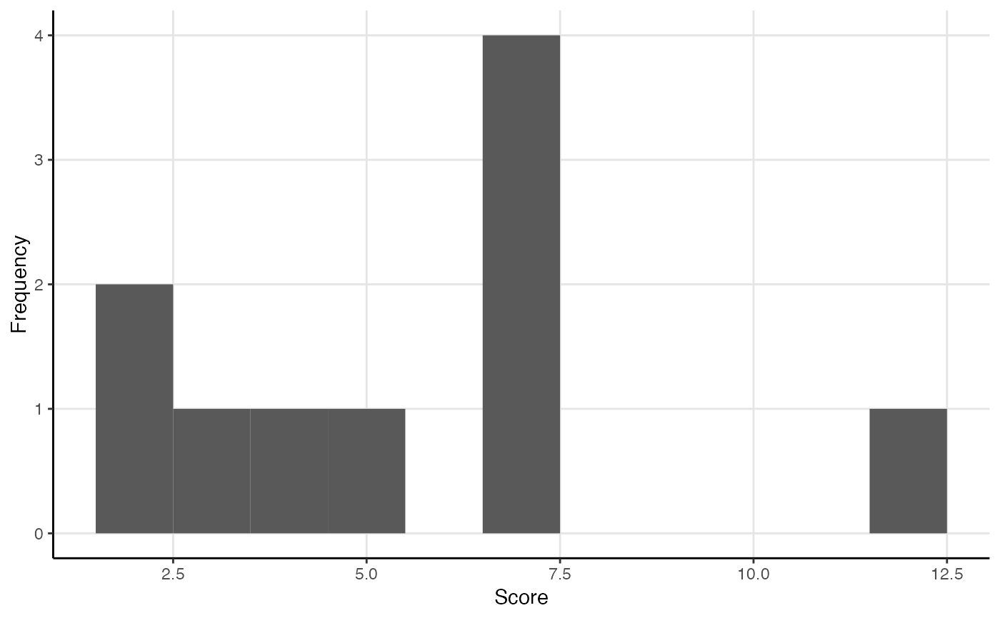
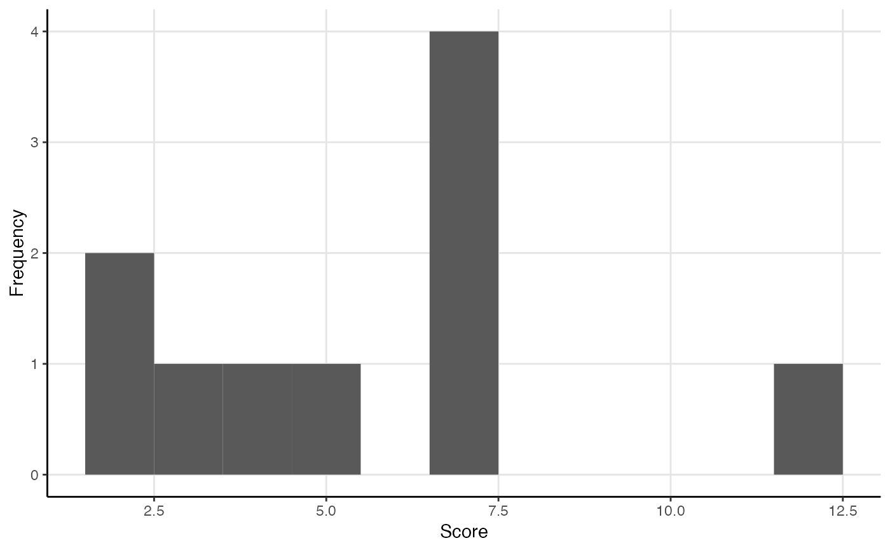

These functions calculate common centrality measures for one- and two-mode networks.
All measures attempt to use as much information as they are offered,
including whether the networks are directed or weighted.
If this would produce unintended results,
first transform the salient properties using e.g. to_undirected() functions.
All centrality and centralization measures return normalized measures by default,
including for two-mode networks.
node_degree(object, normalized = TRUE, direction = c("all", "out", "in"))
edge_degree(object, normalized = TRUE)
graph_degree(object, normalized = TRUE, direction = c("all", "out", "in"))
node_closeness(object, normalized = TRUE, direction = "out", cutoff = NULL)
edge_closeness(object, normalized = TRUE)
graph_closeness(object, normalized = TRUE, direction = c("all", "out", "in"))
node_betweenness(object, normalized = TRUE, cutoff = NULL, nobigint = TRUE)
edge_betweenness(object, normalized = TRUE)
graph_betweenness(object, normalized = TRUE, direction = c("all", "out", "in"))
node_eigenvector(object, normalized = TRUE, scale = FALSE)
edge_eigenvector(object, normalized = TRUE)
graph_eigenvector(object, normalized = TRUE)Arguments
- object
An object of a migraph-consistent class:
matrix, from base R
edgelist, a data frame from base R or tibble from tibble
igraph, from the igraph package
network, from the network package
tbl_graph, from the tidygraph package
- normalized
Logical scalar, whether the centrality scores are normalized. Different denominators are used depending on whether the object is one-mode or two-mode, the type of centrality, and other arguments.
- direction
Character string, “out” bases the measure on outgoing ties, “in” on incoming ties, and "all" on either/the sum of the two. For two-mode networks, "all" uses as numerator the sum of differences between the maximum centrality score for the mode against all other centrality scores in the network, whereas "in" uses as numerator the sum of differences between the maximum centrality score for the mode against only the centrality scores of the other nodes in that mode.
- cutoff
Maximum path length to use during calculations.
- nobigint
Whether big integers should be avoided during calculations
- scale
Logical scalar, whether to rescale the vector so the maximum score is 1.
Value
A single centralization score if the object was one-mode,
and two centralization scores if the object was two-mode.
Depending on how and what kind of an object is passed to the function,
the function will return a tidygraph object where the nodes have been updated
A numeric vector giving the betweenness centrality measure of each node.
A numeric vector giving the eigenvector centrality measure of each node.
Functions
node_degree: Calculates the degree centrality of nodes in an unweighted network, or weighted degree/strength of nodes in a weighted network.edge_degree: Calculate the degree centrality of edges in a networkgraph_degree: Calculate the degree centralization for a graphnode_closeness: Calculate the closeness centrality of nodes in a networkedge_closeness: Calculate the closeness of each edge to each other edge in the network.graph_closeness: Calculate the closeness centralization for a graphnode_betweenness: Calculate the betweenness centralities of nodes in a networkedge_betweenness: Calculate number of shortest paths going through an edgegraph_betweenness: Calculate the betweenness centralization for a graphnode_eigenvector: Calculate the eigenvector centrality of nodes in a networkedge_eigenvector: Calculate the eigenvector centrality of edges in a networkgraph_eigenvector: Calculate the eigenvector centralization for a graph
References
Faust, Katherine (1997). "Centrality in affiliation networks." Social Networks 19(2): 157-191. doi: 10.1016/S0378-8733(96)00300-0
Borgatti, Stephen P., and Martin G. Everett (1997). "Network analysis of 2-mode data." Social Networks 19(3): 243-270. doi: 10.1016/S0378-8733(96)00301-2
Borgatti, Stephen P, and Daniel S Halgin. (2011). "Analyzing affiliation networks." In The SAGE Handbook of Social Network Analysis, edited by John Scott and Peter J Carrington, 417–33. London, UK: Sage. doi: 10.4135/9781446294413.n28
Bonacich, Phillip. 1991. “Simultaneous Group and Individual Centralities.” Social Networks 13(2):155–68. doi: 10.1016/0378-8733(91)90018-O .
See also
to_undirected() for removing edge directions
and to_unweighted() for removing weights from a graph.
Examples
node_degree(mpn_elite_mex)
#> Trevino Madero Carranza Aguilar Obregon Calles
#> 0.0882 0.1765 0.2353 0.1765 0.1765 0.1765
#>
#> + 29 others
node_degree(ison_southern_women)
#> EVELYN LAURA THERESA BRENDA CHARLOTTE FRANCES
#> 0.571 0.500 0.571 0.500 0.286 0.286
#> E9 E10 E11 E12 E13
#> + 20 others 0.667 0.333 0.222 0.389 0.222
#> E14
#> 0.222
edge_degree(ison_adolescents)
#> Betty-Sue Sue-Alice Alice-Jane Sue-Dale Alice-Dale Jane-Dale
#> 0.333 0.667 0.444 0.556 0.556 0.333 + 4 others
graph_degree(ison_southern_women, direction = "in")
#> Mode 1 Mode 2
#> 0.231 0.466
node_closeness(mpn_elite_mex)
#> Trevino Madero Carranza Aguilar Obregon Calles
#> 0.400 0.405 0.466 0.493 0.436 0.459
#>
#> + 29 others
node_closeness(ison_southern_women)
#> EVELYN LAURA THERESA BRENDA CHARLOTTE FRANCES
#> 0.800 0.727 0.800 0.727 0.600 0.667
#> E9 E10 E11 E12 E13
#> + 20 others 0.786 0.564 0.537 0.579 0.537
#> E14
#> 0.537
(ec <- edge_closeness(ison_adolescents))
#> Betty-Sue Sue-Alice Alice-Jane Sue-Dale Alice-Dale Jane-Dale
#> 0.562 0.692 0.600 0.643 0.643 0.500 + 4 others
plot(ec)
ison_adolescents %>%
activate(edges) %>% mutate(weight = ec) %>%
autographr()
 graph_closeness(ison_southern_women, direction = "in")
#> Mode 1 Mode 2
#> 0.214 0.528
node_betweenness(mpn_elite_mex)
#> Warning: 'nobigint' is deprecated since igraph 1.3 and will be removed in igraph 1.4
#> Trevino Madero Carranza Aguilar Obregon Calles
#> 0.00505 0.00819 0.03094 0.02061 0.00806 0.02489
#>
#> + 29 others
node_betweenness(ison_southern_women)
#> Warning: 'nobigint' is deprecated since igraph 1.3 and will be removed in igraph 1.4
#> [1] 0.0967 0.0517 0.0876 0.0498 0.0107 0.0108
#> [7] + 20 others 0.21290 0.01509 0.01995 0.02264 0.00418
#> [13] 0.00418
(eb <- edge_betweenness(ison_adolescents))
#> Betty-Sue Sue-Alice Alice-Jane Sue-Dale Alice-Dale Jane-Dale
#> 7.0 3.0 5.0 4.5 2.5 2.0 + 4 others
plot(eb)

ison_adolescents %>%
activate(edges) %>% mutate(weight = eb) %>%
autographr()
graph_closeness(ison_southern_women, direction = "in")
#> Mode 1 Mode 2
#> 0.214 0.528
node_betweenness(mpn_elite_mex)
#> Warning: 'nobigint' is deprecated since igraph 1.3 and will be removed in igraph 1.4
#> Trevino Madero Carranza Aguilar Obregon Calles
#> 0.00505 0.00819 0.03094 0.02061 0.00806 0.02489
#>
#> + 29 others
node_betweenness(ison_southern_women)
#> Warning: 'nobigint' is deprecated since igraph 1.3 and will be removed in igraph 1.4
#> [1] 0.0967 0.0517 0.0876 0.0498 0.0107 0.0108
#> [7] + 20 others 0.21290 0.01509 0.01995 0.02264 0.00418
#> [13] 0.00418
(eb <- edge_betweenness(ison_adolescents))
#> Betty-Sue Sue-Alice Alice-Jane Sue-Dale Alice-Dale Jane-Dale
#> 7.0 3.0 5.0 4.5 2.5 2.0 + 4 others
plot(eb)

ison_adolescents %>%
activate(edges) %>% mutate(weight = eb) %>%
autographr()
 graph_betweenness(ison_southern_women, direction = "in")
#> Warning: 'nobigint' is deprecated since igraph 1.3 and will be removed in igraph 1.4
#> Mode 1 Mode 2
#> 0.0668 0.1982
node_eigenvector(mpn_elite_mex)
#> Trevino Madero Carranza Aguilar Obregon Calles
#> 0.0808 0.1090 0.1663 0.1703 0.1298 0.1382
#>
#> + 29 others
node_eigenvector(ison_southern_women)
#> EVELYN LAURA THERESA BRENDA CHARLOTTE FRANCES
#> 0.423 0.397 0.472 0.402 0.227 0.287
#> E9 E10 E11 E12 E13
#> + 20 others 0.505 0.323 0.159 0.361 0.251
#> E14
#> 0.251
edge_eigenvector(ison_adolescents)
#> Betty-Sue Sue-Alice Alice-Jane Sue-Dale Alice-Dale Jane-Dale
#> 0.366 0.638 0.447 0.524 0.541 0.333 + 4 others
graph_eigenvector(mpn_elite_mex)
#> [1] 0.63
graph_eigenvector(ison_southern_women)
#> Mode 1 Mode 2
#> 0.0849 0.2630
graph_betweenness(ison_southern_women, direction = "in")
#> Warning: 'nobigint' is deprecated since igraph 1.3 and will be removed in igraph 1.4
#> Mode 1 Mode 2
#> 0.0668 0.1982
node_eigenvector(mpn_elite_mex)
#> Trevino Madero Carranza Aguilar Obregon Calles
#> 0.0808 0.1090 0.1663 0.1703 0.1298 0.1382
#>
#> + 29 others
node_eigenvector(ison_southern_women)
#> EVELYN LAURA THERESA BRENDA CHARLOTTE FRANCES
#> 0.423 0.397 0.472 0.402 0.227 0.287
#> E9 E10 E11 E12 E13
#> + 20 others 0.505 0.323 0.159 0.361 0.251
#> E14
#> 0.251
edge_eigenvector(ison_adolescents)
#> Betty-Sue Sue-Alice Alice-Jane Sue-Dale Alice-Dale Jane-Dale
#> 0.366 0.638 0.447 0.524 0.541 0.333 + 4 others
graph_eigenvector(mpn_elite_mex)
#> [1] 0.63
graph_eigenvector(ison_southern_women)
#> Mode 1 Mode 2
#> 0.0849 0.2630